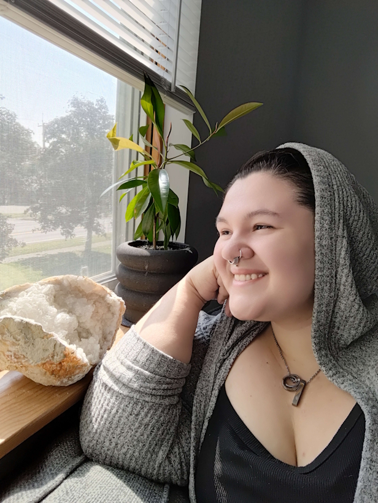

Bring color back into your life.
Hi, friend :)
My name is Britt (she/they), and I'm a queer, AuDHD, and Disabled trauma therapist- as well as a dog mama to the world's sweetest husky, an iced coffee aficionado, and avid video gaming nerd.
I specialize in treating individuals with complex and single-incident trauma, self-esteem, and big existential questions around identity and purpose. I largely serve folx whose trauma manifests other challenges, like depression, anxiety, self-harm, suicidal thoughts, sexual dysfunction, or substance use. I also assist families and partners who have shared trauma experiences or who have trauma impacting relationship dynamics.
Therapy is about healing, and you deserve a place to heal where you can be affirmed, uplifted, and understood by someone who cheers you on (like the rockstar you are).
No matter where you are in your therapy journey, prioritizing yourself isn't always easy. I'm proud of you for being on this journey and look forward to helping you be proud of you, too.

Therapists deserve a soft place to land, too.
Beyond client services, I provide guidance to mental health professionals of all experience levels, from licensed therapists to graduate students. Whether you're looking for support in fostering professional confidence, rewriting practice policies, or integrating anti-carceral practices - or a thousand and one other things we weren't taught in grad school- my goal is to help you get answers and make your work easier.
Here are a few of the common topics that have people reaching out for coaching:
Client Services:
- Reducing the impact of carceral systems in your therapy.
- Providing affirming services to multiply-marginalized clients.
- Integrating existential, relational, and narrative trauma modalities.
- Letter writing for accommodations, gender-affirming care, and more.
- Neuro- and queer-affirming your clinical approach.
- Showing up confidently as the colorful therapist you are!
Being a Therapist:
- Balancing the weight of the world while holding space.
- Establishing equitable (and sustainable!) practice policies.
- Transitioning to, or from, full telehealth operations.
- Reaching your ideal clients using PsychologyToday, TherapyDen, etc.
- Conceptualizing and implementing sliding scale programs.
- Deciding whether or not to panel with insurance payors.